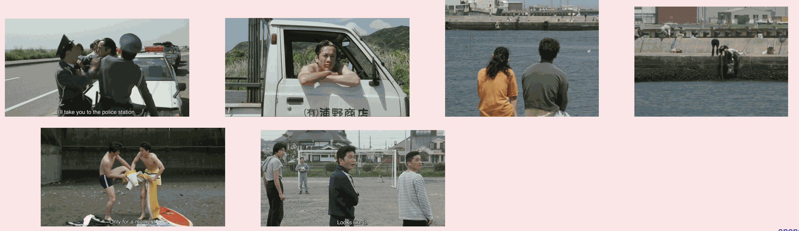
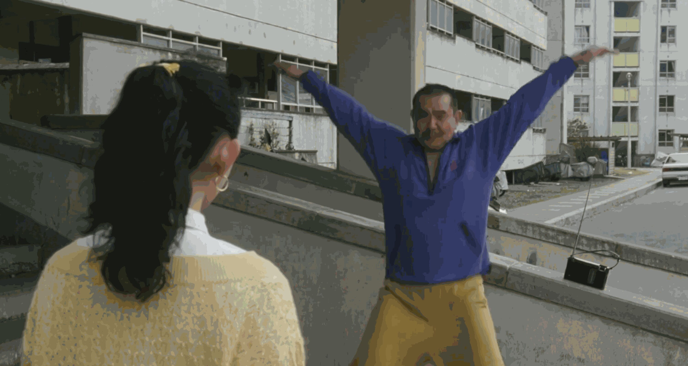
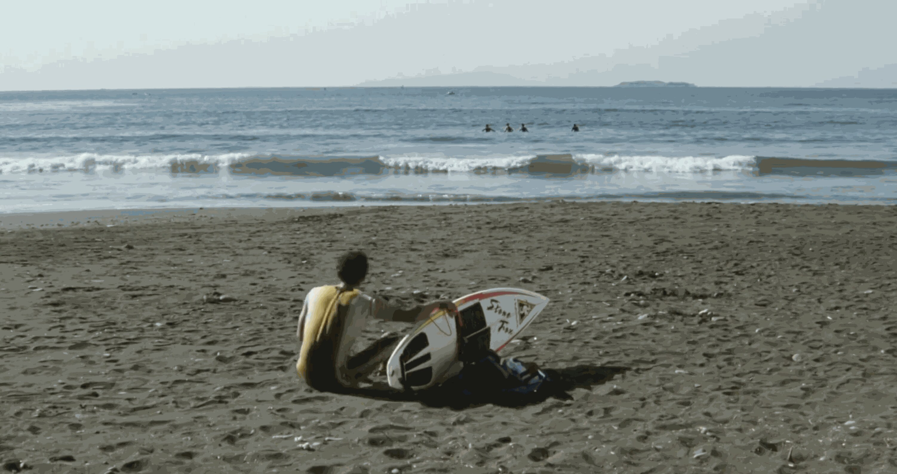
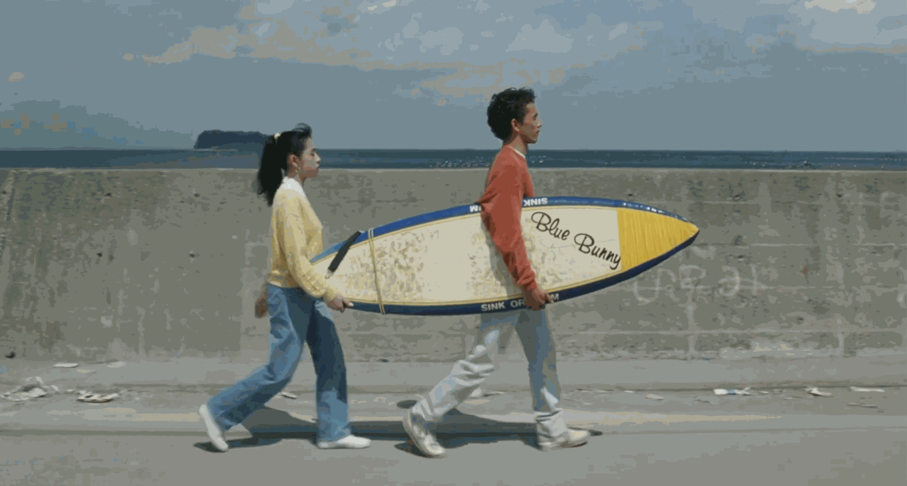
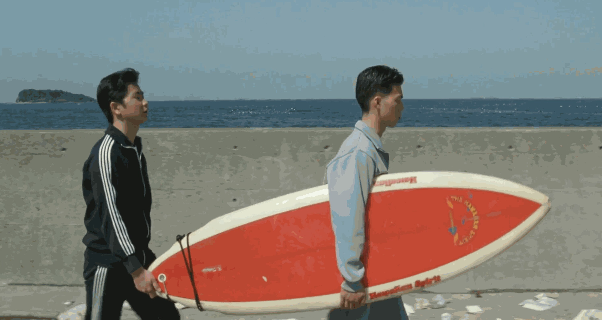
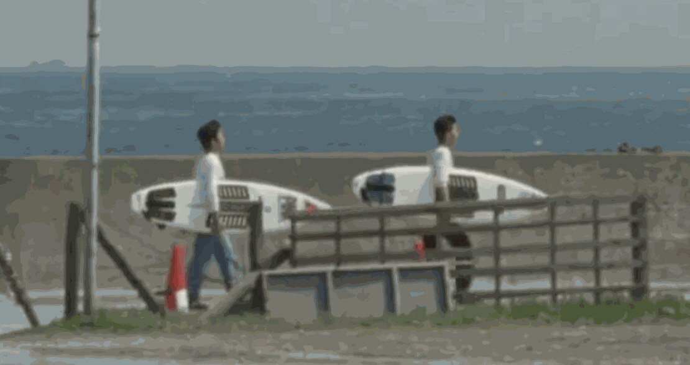
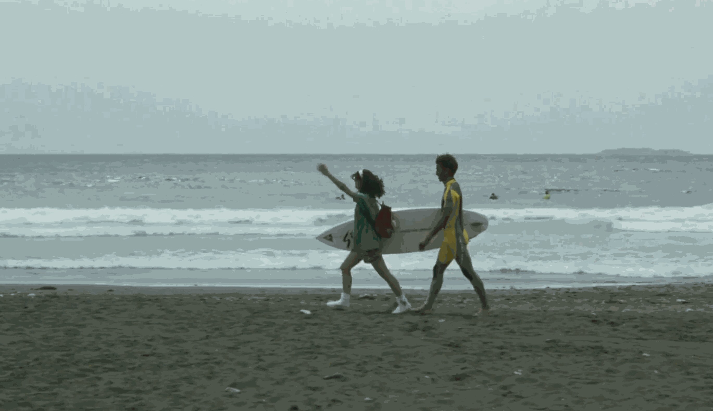
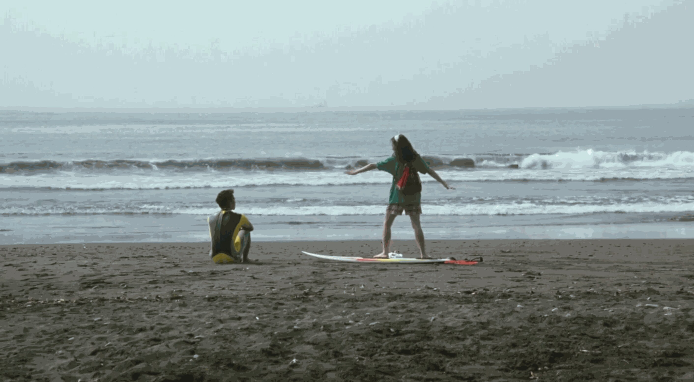
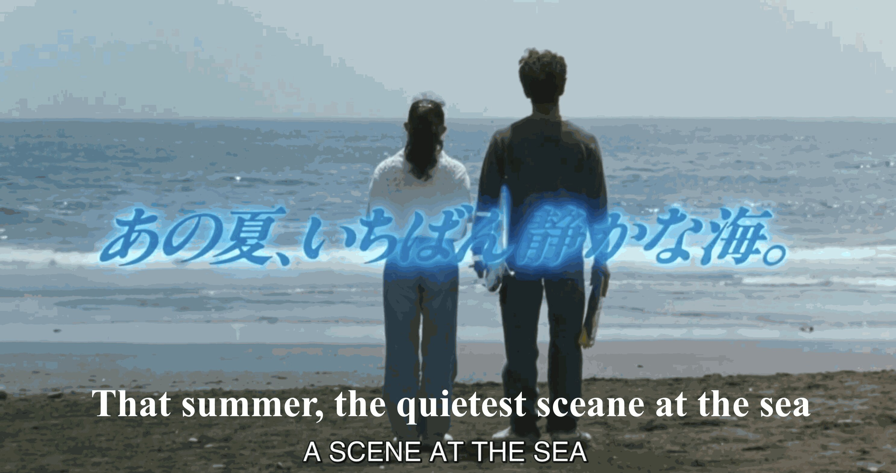

Kitano Takeshi’s direction is built on subtraction. He strips away dramatic convention and lets silence, stillness, and visual space carry what dialogue would ordinarily explain. The points below are the working vocabulary for this week; most of them are argued at length in a recent doctoral study of Kitano’s style, cited throughout as Vlasov 2024.



On what the actor is doing in such a shot:
“The actor does not simply refrain from acting; he becomes a presence that merely ‘exists’ within the frame, and is furthermore ‘confined’ within a shot longer than a standard static one. By this means the audience is able not only to see the protagonist’s solitude and alienation but to feel it.” — Vlasov 2024, 126 (my translation)






Takako walking toward the sea runs 1 minute 23 seconds. Vlasov sets it beside the famous opening of Touch of Evil (1958), which at 3 minutes 43 seconds is nearly three times longer and yet feels shorter:
“In A Scene at the Sea the camera does not move, the shot is filmed in long shot, and the actress’s action within the frame does not push the story forward (she is only walking toward the sea), so the shot comes to feel like a photograph. Its effect is to stretch time and to create a meditative atmosphere.” — Vlasov 2024, 42 (my translation)
“As for the story, it amounts to no more than a young man working part-time on a garbage truck who picks up a broken surfboard and becomes absorbed in surfing; there is nothing that could properly be called a plot.” — Yamane Sadao (1990–1999 reviews, 85), quoted in Vlasov 2024, 21
“Both in the unfolding of the story and in the individual scenes, everything that would ordinarily count as dramatic has been stripped away.” — Yamane Sadao (1990–1999 reviews, 159), quoted in Vlasov 2024, 21
Discussion: if nothing is dramatized, what holds our attention for ninety minutes? Rhythm, repetition of images, and the sea itself are the candidates worth testing against the film.
“The characters in Kitano’s films are indifferent to external stimulus, and give the impression of having been solitary from birth. Solitude in Kitano’s cinema can therefore be said to be ontological, that is, existential, in nature. In films such as BROTHER and A Scene at the Sea, the characters’ solitude is accounted for by elements of the screenplay, such as a hearing impairment or a language barrier, whereas in the great majority of Kitano’s films no such explanatory element is present at all. Whether they are alone in a scene or surrounded by friends, they are always depicted as beings made to feel their solitude.” — Vlasov 2024, 125–126 (my translation)
“Why should Shigeru, who by the final part of the film has become a skilled surfer, lose his life in so calm a sea? One hypothesis is that he was driven by an impulse to become one, for ever, with the sea he revered, and took his own life. To accept such a hypothesis is closer to treating a wish as a reality. … Given the obsessive love for the sea the film depicts, it may be inferred that even if someone had warned him he had almost no chance of surviving that day, he would probably have taken the risk and gone in.” — Vlasov 2024, 121–122 (my translation)
“The characters in Kitano’s films look like mannequins; they are close to the actor as ‘model’ in Bresson’s sense. In A Scene at the Sea, for instance, there are two scenes in which Takako sheds tears. What the audience sees, however, is no more than a single tear running down her cheek: no expression of sadness or suffering can be seen at all, and her face remains impassive.” — Vlasov 2024, 126 (my translation)
Suppressed expression lowers the dramatic register and redirects attention from momentary feeling to bodily reaction and attitude. Characters who show nothing and take part in nothing become bystanders in their own story, watching it much as we do. (Vlasov 2024, 126)
All of them static, with nothing happening that advances the story or reveals character through action. The film ends on a long static shot of a figure filmed from behind, motionless, looking at the sea. (Vlasov 2024, 42, 66)
An ordinary drama runs 1,000 to 1,700 lines; Battles Without Honor and Humanity (1973) has about 1,080. Most of what is spoken here is small talk by supporting characters. In HANA-BI, Miyuki is on screen some twenty-five minutes and says two words, “thank you” and “I’m sorry.” (Vlasov 2024, 25)
Frame captures from A Scene at the Sea (Kitano Takeshi, 1991) are used for classroom analysis and discussion.